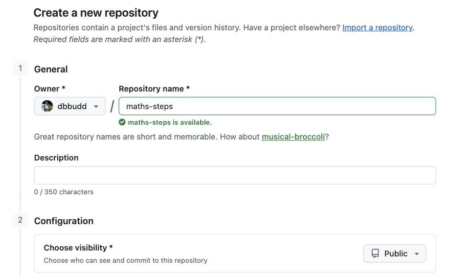
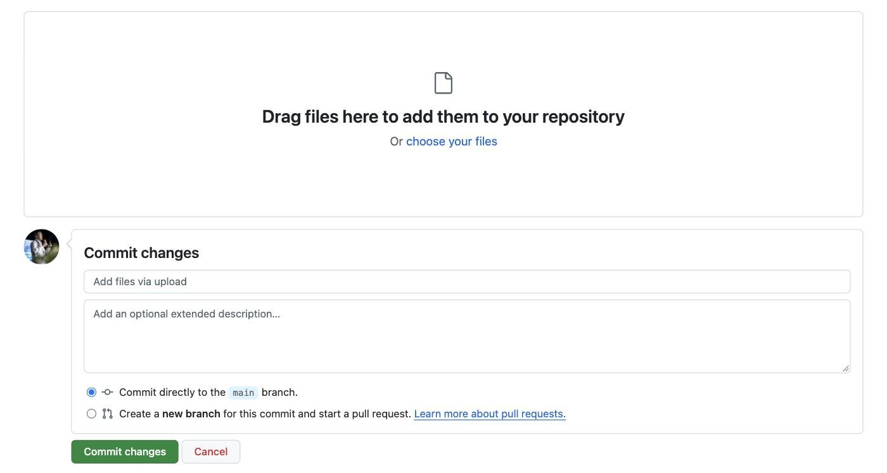
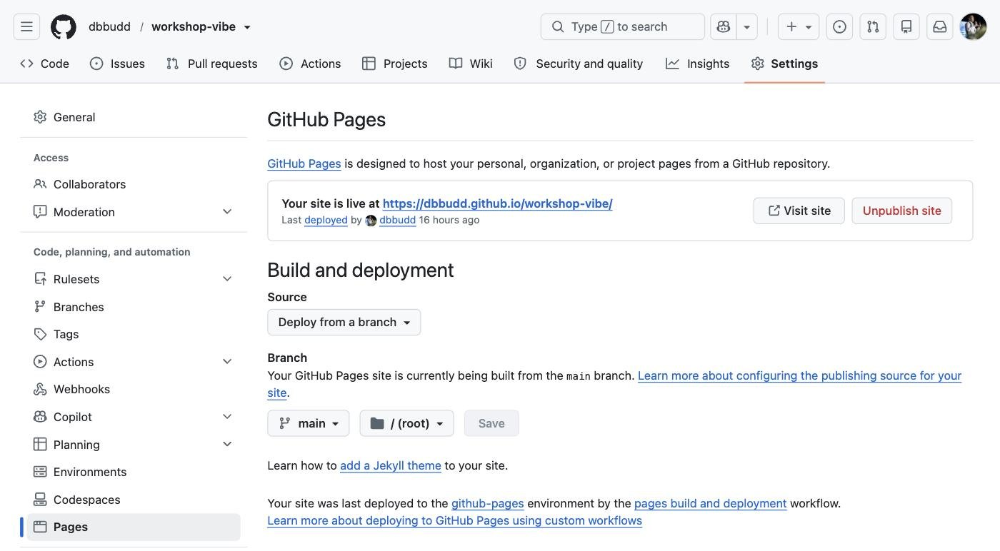

GitHub Pages
GitHub Pages publishes a website straight from a GitHub repository, free, at an address like yourname.github.io/your-tool. This website is published with it.
Best for
A single-screen tool, or a small site made of HTML files, like the ones Gemini, ChatGPT or Claude Code make.
Start here
github.com
A free account is enough for a public site.
This guide is a first draft. Screenshots marked “to come” are still to be taken, and anything tagged TBC still needs checking.
Exercise 1: Make an account and a repository

- Sign up at github.com, or sign in.
- Press + at the top, then New repository. Give it a short name: it becomes part of your link.
- Leave it Public, turn on Add README, and press Create repository.
Exercise 2: Upload your tool
Your tool needs a file called index.html. Copy its code from the AI tool (in Gemini Canvas: Share & export, then Copy contents). On a Mac, paste it into TextEdit, choose Format, then Make Plain Text, and save it as index.html. When TextEdit asks, choose Use .html.

- In your repository, choose Add file, then Upload files.
- Drag in
index.html, and anything it uses, such as pictures. - Press Commit changes.
Exercise 3: Turn on Pages

- Open Settings, then Pages.
- Under Build and deployment, choose Deploy from a branch, then main and / (root), and press Save.
- Wait a few minutes (it can take up to 10), then refresh. Your link appears at the top of the page, with Visit site.
Exercise 5: Keep it up to date with GitHub Desktop
Uploading in the browser is quickest for one file. When your tool has several files, or you change it often, GitHub Desktop is easier. You keep the tool in a folder on your computer, change it there, and send each change to GitHub as a commit. When you push, your site updates by itself.
Screenshot to come
GitHub Desktop with a changed file: the summary box and Commit to main marked 13, and Push origin marked 14.
- Install GitHub Desktop, free for Mac and Windows, and sign in with your GitHub account.
- Choose File, then Clone Repository, and pick your tool’s repository. Choose where its folder goes on your computer.
- Change the files in that folder, or ask Claude Code to change them.
- Back in GitHub Desktop, type a short summary of what you changed, and press Commit 1 file to main. The number is how many files you changed.
- Press Push origin. Your site updates within about 10 minutes.
If your tool started in a folder on your computer, such as one Claude Code made, add that folder instead of cloning: choose File, then Add Local Repository. If GitHub Desktop says it isn’t a repository yet, choose create a repository. Then press Publish repository, and untick Keep this code private: Pages on a free account needs a public repository.
Push it further
Ideas for when your first site works.
Add a second page, and link to it from the first.
Use your own web address: in Settings, then Pages, type it under Custom domain and press Save.
Your domain provider needs a matching record. Then tick Enforce HTTPS.
Ask Claude Code to publish your next tool for you.
Videos
Videos to come. Each one will load only when you press play.
Video to come
Publishing your first site with GitHub Pages.
Why it is worth watching. TBC
Video to come
Updating a GitHub Pages site.
Why it is worth watching. TBC
Video to come
Using your own web address.
Why it is worth watching. TBC